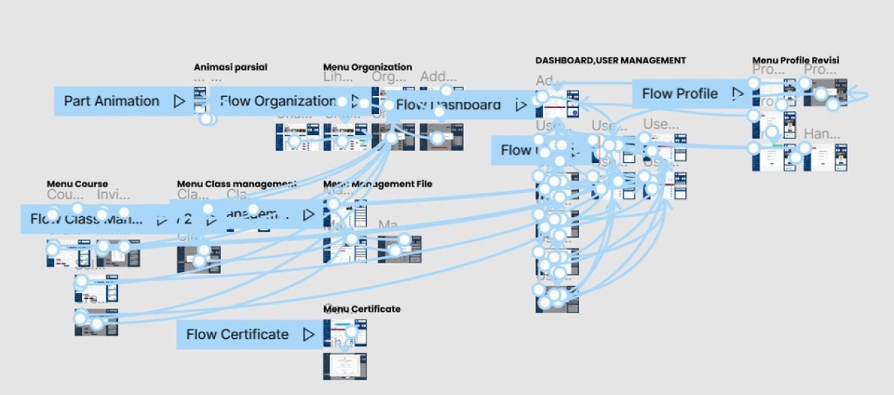
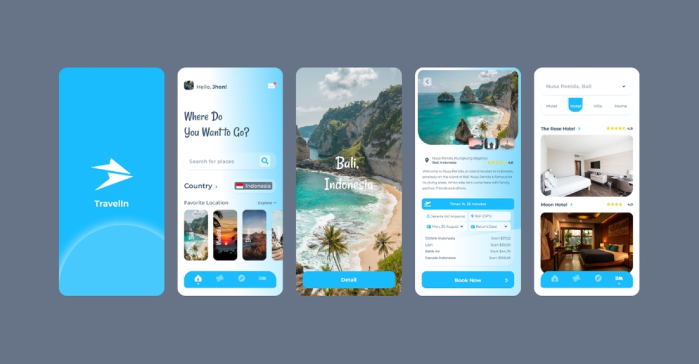
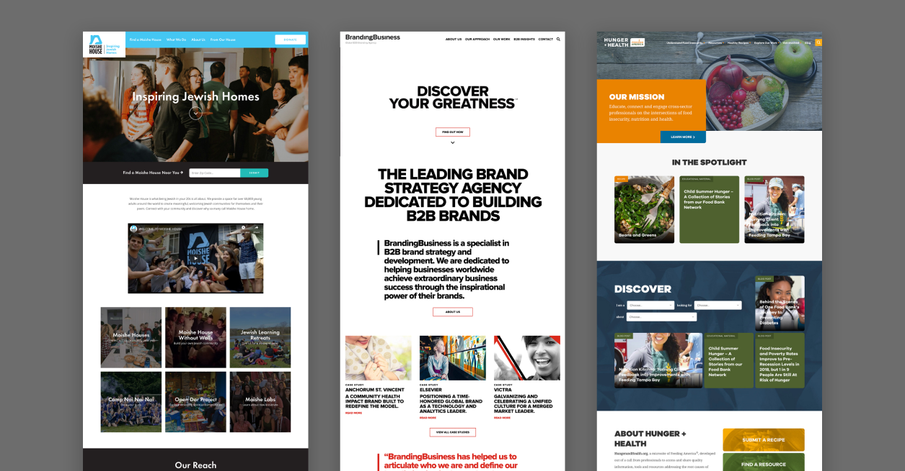

Tentang Project
Dalam belajar UI/UX Design, pemahaman mengenai konsep dan prinsip dasar sangatlah penting. UI
(User Interface) dan UX (User Experience) merupakan dua elemen utama yang menentukan kualitas
sebuah aplikasi atau situs web. UI berkaitan dengan tampilan visual dan elemen interaktif pada
sebuah aplikasi, seperti tombol, warna, dan layout. Sementara itu, UX lebih fokus pada
pengalaman pengguna, seperti kemudahan penggunaan, navigasi, dan kepuasan pengguna saat
berinteraksi dengan aplikasi tersebut. Memahami perbedaan antara UI dan UX ini penting untuk
membuat desain yang tidak hanya menarik tetapi juga mudah digunakan.
Sebagai langkah awal, belajar dasar-dasar seperti desain visual, teori warna, dan hirarki visual
menjadi hal penting dalam UI/UX. Di UI/UX, hierarki visual membantu mengarahkan mata pengguna ke
elemen-elemen penting terlebih dahulu, seperti tombol aksi atau informasi utama. Selain itu,
keterampilan dalam mengatur tipografi dan menjaga konsistensi desain juga memainkan peran besar
dalam memberikan pengalaman yang nyaman bagi pengguna.
Untuk memperdalam pemahaman, membuat proyek kecil sebagai latihan bisa membantu meningkatkan
kemampuan dalam UI/UX Design. Proyek ini bisa berupa pembuatan wireframe sederhana atau mockup
aplikasi. Dengan begitu, kita bisa mempraktikkan teori yang telah dipelajari dan melihat
bagaimana desain tersebut bekerja dalam konteks yang lebih nyata.
Tujuan Project
Tujuan dari proyek UI/UX Design ini adalah untuk menciptakan antarmuka yang intuitif dan ramah
pengguna. Dengan desain yang tepat, pengguna bisa dengan mudah memahami bagaimana cara
menggunakan aplikasi tanpa mengalami kebingungan. Tujuan lain dari proyek ini adalah untuk
mengoptimalkan pengalaman pengguna, sehingga mereka merasa puas dengan tampilan dan fungsi
aplikasi. Menghadirkan antarmuka yang menarik juga diharapkan bisa meningkatkan loyalitas
pengguna terhadap aplikasi.
Proyek ini juga bertujuan untuk meningkatkan efisiensi waktu dan kenyamanan pengguna. Dengan
desain UI yang rapi dan UX yang intuitif, pengguna diharapkan dapat menyelesaikan tugas mereka
dengan lebih cepat. Selain itu, desain yang bagus dapat memberikan kesan profesional terhadap
aplikasi dan membuat pengguna merasa aplikasi tersebut dapat dipercaya.
Dengan adanya proyek ini, juga diharapkan dapat menambah pengalaman dan pengetahuan dalam UI/UX
Design. Menerapkan teori yang telah dipelajari dalam proyek nyata akan sangat membantu dalam
mengasah keterampilan. Selain itu, proyek ini bisa menjadi portofolio bagi desainer yang ingin
menunjukkan kemampuannya di dunia kerja atau kepada klien.
Proses
- Proses apa yang akan dilakukan pada saat pembuatan Project nya

Proses dalam proyek ini dimulai dengan tahap penelitian dan pemahaman kebutuhan pengguna. Dalam
UI/UX Design, memahami target pengguna sangat penting untuk menentukan jenis desain yang akan
dibuat. Penelitian ini meliputi observasi dan survei untuk memahami masalah yang dihadapi
pengguna dan harapan mereka terhadap aplikasi. Setelah itu, dilanjutkan dengan pembuatan
wireframe yang merupakan kerangka kasar dari tampilan aplikasi.
Setelah wireframe selesai, langkah berikutnya adalah membuat mockup yang lebih rinci dengan
menambahkan elemen-elemen visual. Pada tahap ini, pemilihan warna, font, dan gambar yang sesuai
sangat penting agar desain terlihat profesional dan menarik. Proses ini juga melibatkan uji coba
terhadap pengguna untuk mendapatkan masukan tentang desain yang telah dibuat.
Tahap terakhir adalah memperbaiki desain berdasarkan umpan balik yang telah dikumpulkan. Proses
ini berulang hingga desain dianggap optimal. Melalui uji coba dan iterasi, desain UI/UX akan
terus diperbaiki hingga benar-benar memberikan pengalaman yang memuaskan bagi pengguna. Proses
ini memastikan bahwa desain yang dibuat tidak hanya menarik secara visual tetapi juga nyaman
untuk digunakan.
Hasil
Hasil dari proyek ini adalah sebuah desain aplikasi yang memiliki antarmuka yang menarik dan
intuitif. Aplikasi ini diharapkan mampu memudahkan pengguna dalam menjalankan tugas mereka tanpa
kesulitan. Desain yang dibuat memiliki tampilan yang modern dan profesional, dengan warna dan
tipografi yang konsisten serta navigasi yang mudah dipahami oleh pengguna baru sekalipun.
Selain tampilan yang menarik, hasil proyek ini juga memastikan bahwa pengguna merasa nyaman dan
puas saat menggunakan aplikasi. Dengan UX yang dirancang sedemikian rupa, aplikasi diharapkan
mampu memberikan pengalaman yang mulus dan tidak membingungkan. Hal ini sangat penting dalam
menjaga loyalitas pengguna agar mereka kembali menggunakan aplikasi di masa depan.
Hasil lain dari proyek ini adalah portofolio yang dapat digunakan sebagai bahan presentasi
kemampuan UI/UX Design. Dengan adanya portofolio ini, desainer memiliki bukti konkret atas
kemampuan mereka dalam menciptakan desain yang tidak hanya bagus secara visual, tetapi juga
efektif dalam memberikan pengalaman yang memuaskan. Proyek ini menjadi pencapaian yang berarti
dalam perjalanan belajar UI/UX Design

Screenshoots
